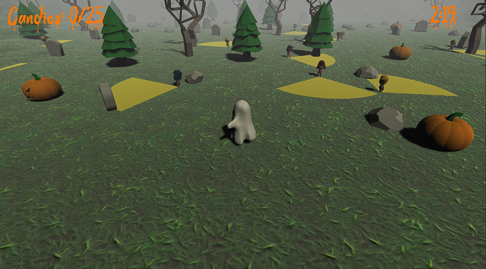

Spooker
Spooker is a game where you play as a ghost with the goal of scaring candy out of children without being seen by them. If you are seen by them, you will take damage. The closer you get to them though, the more candy they drop!
Spooker was made in about 30 hours during a Fall-themed gamejam at Marist College. All of the art assets were developed by Paul Harden, all of the programming was done by myself.